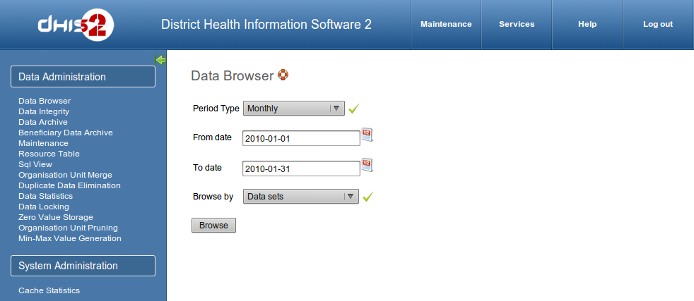
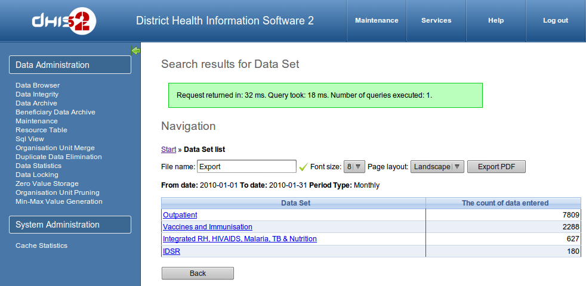
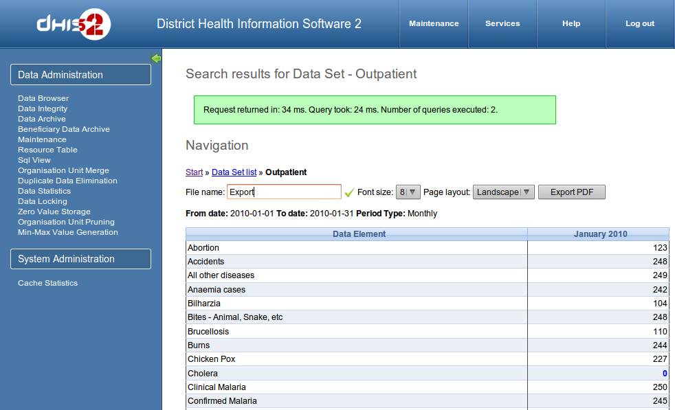
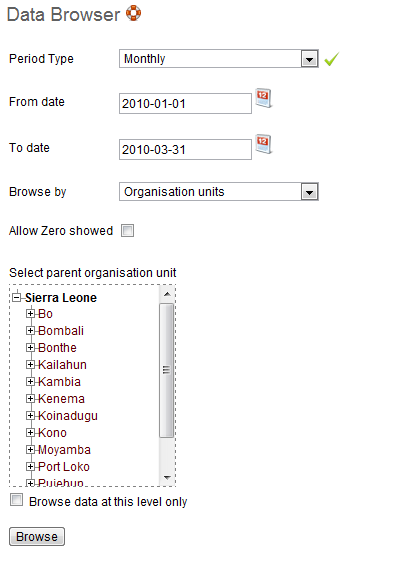
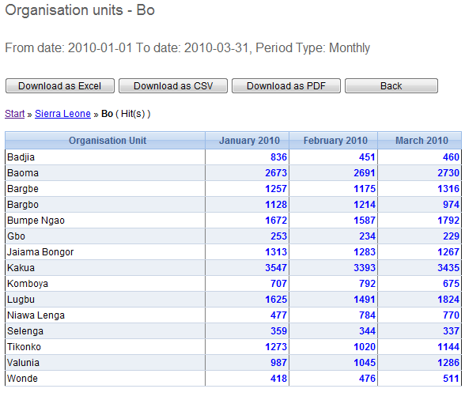
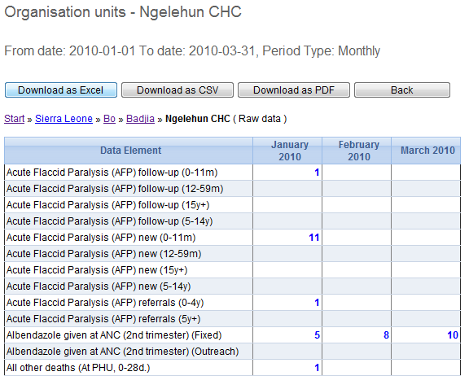

Table of Contents
The data administration module provides a range of functions to ensure that the data stored in the DHIS2 database is integral and that the database performance is optimised. These functions should be executed on a regular basis by a data administrator to ensure that the quality of the data stored is optimal.
The data browser maintenance and analysis module which allows the user to produce a summary of the data contained in the DHIS2 database. The summary view provides a count of data elements which have been entered at the selected organisation unit as well as its descendants. Raw data for all data elements for a range of time periods and a given organisational unit can be browsed and exported to Excel, CSV, or PDF formats. There are four modes of the data browser, which determine how the data is summarized
Data sets
Data element groups
Organisational unit groups
Organisational units
Each of these options can be accessed by selecting the desired option from "Browse by" drop-down menu.
In order to produce a summary of submitted data for a given period and grouped by data sets, the user should follow this procedure. Begin by selecting a given periodicity type (e.g. Weekly, monthly, yearly, etc) and then a "From date" and "To date". (e.g. January 2009 to March 2009). Select the type of summary to be produced (e.g. Dataset) from the "Browse by" drop-down menu. Click the "Browse" button to view the summary.
|  |
A summary of the number of data element values that have been submitted over the user selected time period is shown below.
|  |
By clicking on the name of the individual dataset, a more detailed summary of each data element can be obtained as shown below. A cross-tab table summarising each time period will be shown.
|  |
The functionality of the grouping by Datasets, Data element groups, and Organisational groups is essentially the same.
The functionality of grouping by organisation units will be discussed below. Begin by selecting "Organisation units" from the "Browse by" drop-down menu. The organisational hierarchy present in the database will now be displayed. Organisational units can be expanded by clicking on the plus symbol in the organisational tree view.
|  |
By clicking on an organisational unit, and the clicking the "Browse" button, a summary of submitted data elements present in the database is returned for all immediate children of the selected organisational as shown below:
|  |
By clicking on one of the organisational units, two drill down modes are presented to the user.
Summary drill down- Drill down to the selected organisational units children to see the count of data elements.
View raw data at this level: View the actual raw data at the selected organisational unit. A typical view of the raw data export can be seen below.
|  |
Data can be exported into Excel, CSV and as a PDF report by clicking the appropriate button.